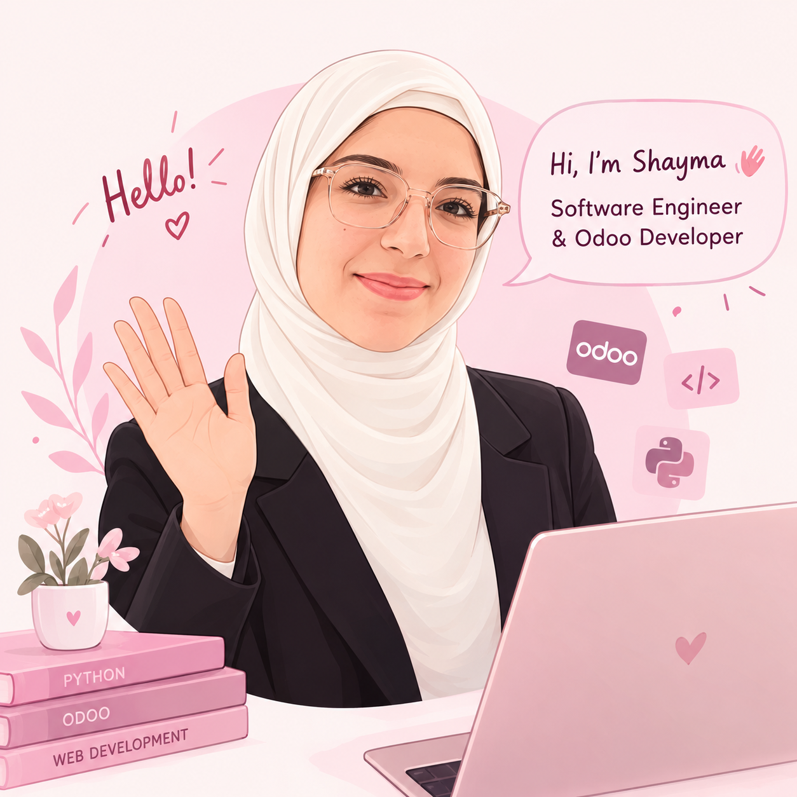

01 / ERP
Custom Odoo Modules
Designed custom models, business logic, and views to support business workflows inside Odoo.
OdooPythonXML
Hi, I’m Shayma Trad — a Software Engineer focused on Odoo and Python development, custom business solutions, API integrations, and making complex workflows feel simple.
Odoo customization · Backend development · Integrations · Data

I enjoy turning business needs into maintainable software — from custom ERP features to APIs, reporting, and data workflows.
Professional experience developing and maintaining Odoo solutions, implementing access-aware APIs, building reports, and supporting version migrations. I also have hands-on experience with ETL, dashboards, and mobile app development from internships.
A practical mix of backend development, ERP customization, databases, and web technologies.
Representative project highlights based on my experience. Details are kept high-level where the work was client-specific.
Designed custom models, business logic, and views to support business workflows inside Odoo.
Developed an Odoo module to generate REST endpoints with structured documentation using QWeb.
Implemented create, read, update, and delete API operations aligned with user permissions and access rights.
Worked on migrations and module compatibility across Odoo versions, including v15, v16, and v19.
Built Talend jobs to extract, cleanse, transform, and load data from multiple file sources.
Created interactive Power BI dashboards and analytical reports to support decision-making.
Configured automated task scheduling and management workflows using Rundeck.
Contributed to driver and client mobile apps, including bug fixes and refactoring for location search and live status.
Created QWeb/system reports and configured Web Tours for functional testing and user guidance.
From software engineering studies to practical work across ERP, data, and mobile development.
Tunisofts – MASA Technology · Tunisia / Saudi Arabia
Tunisofts · Sousse, Tunisia
Meili · Remote, London, UK
Higher Institute of Applied Science and Technology of Sousse · 2018–2023
Business Intelligence Foundation Professional Certification (BIFPC™); Microsoft Office Specialist Word 2016 and PowerPoint 2019.
Cyber Trace Club (2019–2022): Organization Manager, networking events with 30+ participants, and 50+ CTF tasks. North American Tunisian Engineers Group (2019–2021): Engineering for Society and Marketing committees.
I’m interested in software engineering opportunities where I can build reliable products, solve meaningful problems, and keep growing technically.